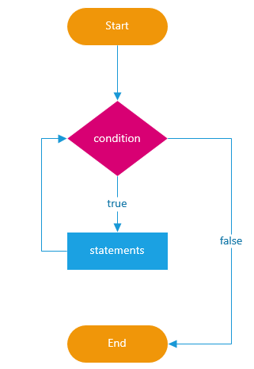
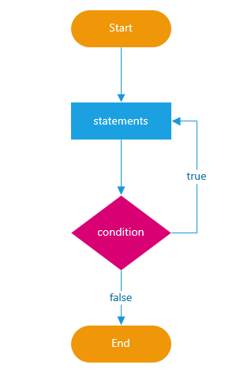

1. Вступ
Часте завдання програмування - виконання однотипної дії багато разів. Наприклад, вивести клієнтів зі списку один за іншим, або перебрати суми зарплат і для кожної виконати однаковий код. Саме для таких цілей, багаторазового повторення однієї ділянки коду, використовуються цикли.
- Цикл — керуюча конструкція в високорівневих мовах програмування, призначена для організації багаторазового виконання набору інструкцій.
- Тіло циклу — послідовність інструкцій, призначена для багаторазового виконання.
- Ітерація — одиничне виконання тіла циклу.
- Умова виходу — вираз, що визначає буде в черговий раз виконуватися ітерація, або цикл завершиться.
- Лічильник — змінна, що зберігає поточний номер ітерації. Цикл не обов'язково містить лічильник, і він не зобов'язаний бути один, умова виходу з циклу може залежати від декількох змінних в циклі змінних.
Виконання будь-якого циклу включає:
- первісну ініціалізацію змінних циклу
- перевірку умови виходу
- виконання тіла циклу
- оновлення змінної циклу на кожній ітерації
Крім того, більшість мов програмування надають засоби керування циклом, наприклад, оператори завершення циклу, тобто виходу з циклу незалежно від істинності умови виходу.
2. Цикл while
Цикл з передумовою — цикл, який виконується поки істинна деяка умова, вказана перед його початком. Ця умова перевіряється до виконання тіла циклу, тому тіло може бути не виконано жодного разу, якщо умова з самого початку помилкова.
Інструкція while створює цикл, який виконує блок коду, поки умова перевірки
оцінюється як true.
while (expression) {
// код, тіло циклу (statement)
}
- Оператор
whileвираховуєexpressionперед кожною ітерацією циклу. - Якщо
expressionоцінюється якtrue, операторwhileвиконуєstatement. - Якщо
expressionоцінюється якfalse, виконання циклу переривається і скрипт продовжує виконувати інструкції після циклуwhile.
Блок-схема ілюструє цикл while.

Зробимо лічильник.
let counter = 0;
while (counter < 10) {
console.log('counter: ', counter);
counter += 1;
}
Будемо заповнювати місця в готелі до тих пір поки поточна кількість клієнтів не дорівнюватиме максимально допустимому.
let clientCounter = 18;
const maxClients = 25;
while (clientCounter < maxClients) {
console.log(clientCounter);
clientCounter += 1;
}
3. Цикл do...while
Цикл з постумовою — цикл, в якому умова перевіряється після виконання тіла циклу. Звідси випливає, що тіло завжди виконується хоча б один раз.
Оператор do...while створює цикл, який виконує блок коду до тих пір, поки
expression не стане дорівнювати false.
На відміну від циклу while, цикл do...while завжди виконує statement як
мінімум один раз, перш ніж він оцінить expression.
do {
// statement
} while (expression);
Всередині циклу потрібно внести зміни в деяку змінну, щоб переконатися, що вираз
дорівнює false після ітерацій. В іншому випадку буде нескінченний цикл.
Блок-схема ілюструє цикл do-while

let password = '';
do {
password = prompt('Введіть пароль довше 4-х символів', '');
} while (password.length < 5);
console.log('Ввели пароль: ', password);
4. Цикл for
Цикл з лічильником — цикл, в якому деяка змінна змінює своє значення від заданого початкового до кінцевого значення, з деяким кроком, і для кожного значення цієї змінної тіло циклу виконується один раз.
У більшості процедурних мов програмування реалізується оператором for, в якому
вказується лічильник, необхідну кількість ітерацій і крок, з яким змінюється
лічильник.
for (initialization; condition; post-expression) {
// statements
}
Алгоритм виконання циклу for:
Ініціалізація (initialization) — вираз ініціалізації виконується один раз, коли починається цикл.Використовується для ініціалізації змінної-лічильника. Якщо використовується ключове слово
let, змінна лічильника є локальною для циклу.Умова (condition, test) — вираз, що оцінюється перед кожною ітерацією циклу. Тіло циклу виконується тільки тоді, коли вираз умови приймає значення
true. Цикл завершується, якщо значення будеfalse.Тіло (statements) — виконується в разі задоволення умови.
- Поствираз (post-expression) — виконується після тіла на кожній ітерації циклу, але перед перевіркою умови. Використовується для поновлення змінної-лічильника.
Змінні-лічильники, за традицією, називаються буквами i/j/k.
const max = 10;
for (let i = 0; i < max; i += 1) {
console.log(i);
}
Порахуємо суму чисел до певного значення.
const target = 3;
let sum = 0;
for (let i = 0; i <= target; i += 1) {
sum += i;
}
console.log(sum);
Згадаймо про операцію a % b і виведемо залишок від ділення використовуючи
цикл.
const max = 10;
for (let i = 0; i < max; i += 1) {
console.log(`${max} % ${i} = `, max % i);
}
5. Інструкції break і continue
5.1. break
Вийти з циклу можна не тільки під час перевірки умови, а й взагалі в будь-який
момент. Цю можливість надає інструкція break. Вона повністю припиняє виконання
циклу і передає управління на рядок за його тілом.
Спеціально перервемо цикл на 5-й ітерації.
for (let i = 0; i < 10; i += 1) {
if (i === 5) {
console.log('Дійшли до 5-ї ітерації, перериваємо цикл!');
break;
}
}
5.2. continue
Директива continue перериває не весь цикл, а лише виконання поточної ітерації.
Її використовують, якщо зрозуміло, що на поточної ітерації циклу робити більше
нічого або взагалі нічого робити не потрібно і пора переходити на наступну
ітерацію.
/*
* Використовуємо цикл для виведення тільки непарних чисел.
* Для парних i спрацьовує continue, виконання тіла припиняється
* і управління передається на наступну ітерацію.
*/
const number = 10;
for (let i = 0; i < number; i += 1) {
if (i % 2 === 0) {
continue;
}
console.log('Непарне i: ', i); // 1, 3, 5, 7, 9
}